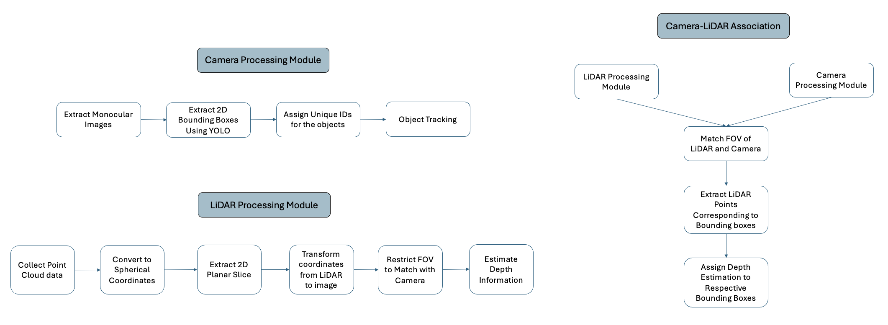

Enhancing the robustness of object detection and tracking through multimodal integration
- Keywords: Object detection, object tracking, LiDAR, 3D detection
- Tech Stack: Python, PyTorch, DeepSORT, YOLO
- Designed a multimodal object detection and tracking system by integrating monocular camera images with 2D LiDAR data for enhanced depth estimation in autonomous driving.
- Designed a dual-pipeline system with YOLOv8 and DeepSORT for 2D detection and tracking, and a LiDAR module that extracts an optimal 2D slice from 3D point clouds for depth estimation.
- Implemented sensor fusion using calibration matrices to align LiDAR points with camera frames, enabling accurate depth assignment to detected objects.
- Achieved real-time performance (~25ms/frame) while maintaining robust tracking and detection across diverse weather and traffic conditions using the NuScenes dataset.
- Evaluated system performance using mAP, IoU, and MOTA metrics, demonstrating improved accuracy and computational efficiency over traditional 3D LiDAR-based methods.
